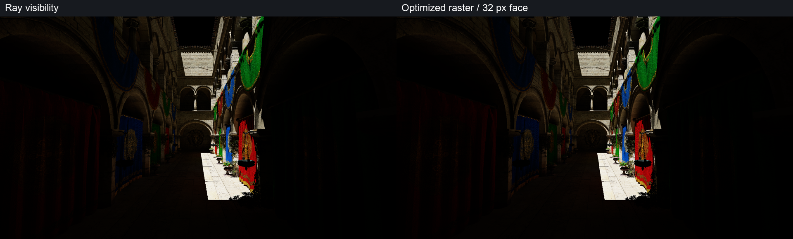
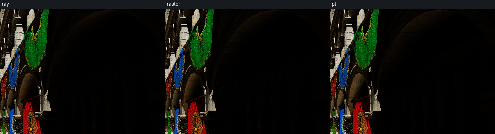
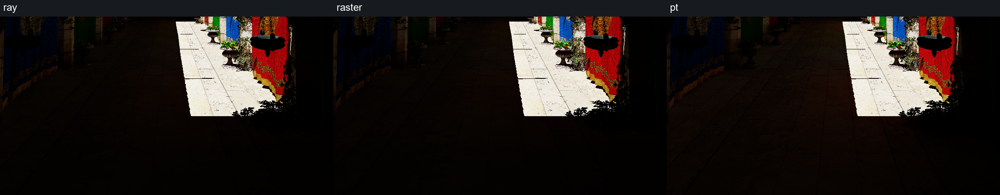
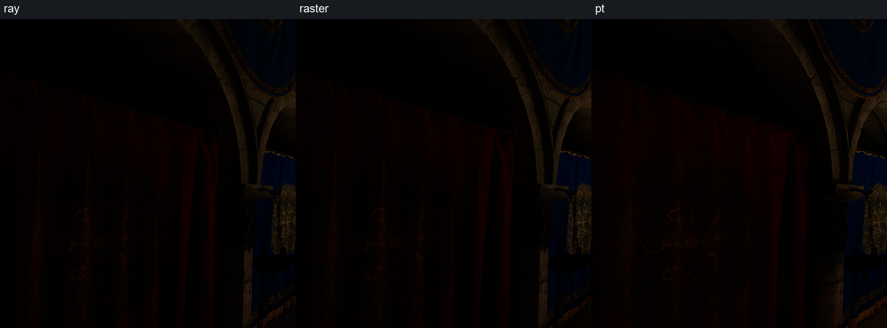
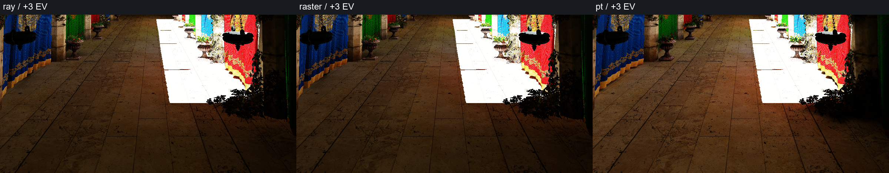
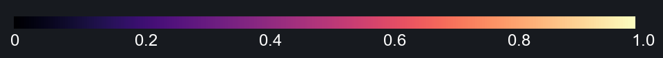
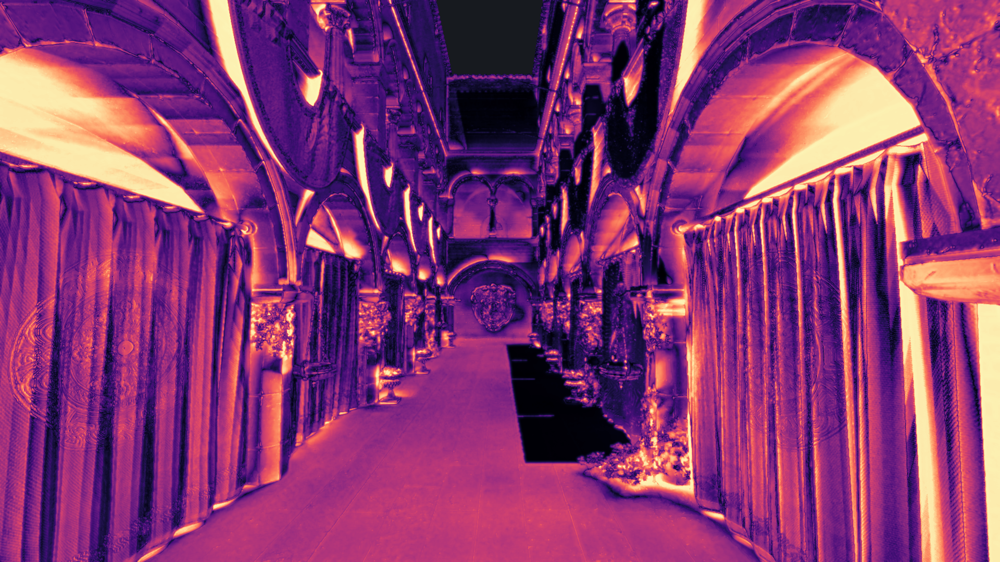

两组均以Accumulate累积，持续更新probe，画面通过连续两次翻倍稳定检查后截图。优化光栅每面32²，开启逐probe面的物体剔除和间接VS/PS绘制。射线后端保持原实现。光栅整图耗时约为射线的 39.9倍；本次画质数值见下表，不代表其他视角和分辨率的结论。
| 方案 | MSE ↓ | HDR-FLIP ↓ | 整图GPU ms ↓ | Probe更新GPU ms ↓ | 累积帧数 | 最终翻倍相对RMS |
|---|---|---|---|---|---|---|
| 射线更新 | 0.00053718201 | 0.41146 | 2.106 | 0.333 | 512 | 0.0485% |
| 优化光栅更新 | 0.00054042079 | 0.41114 | 83.968 | 82.185 | 512 | 0.0511% |
光栅相对射线的MSE变化为 +0.60%，HDR-FLIP变化为 -0.00031；两种输出之间的线性HDR MSE为 4.0609747e-06。完整1080p图和局部图如下。热力图均比较同一PT，固定Magma[0,1]，黑紫误差低，橙黄误差高，背景不参与统计。

射线1080p · 优化光栅1080p · PT Reference 1080p
局部检查：本次静态视角的拱门、柱脚和地面未见明显新增的cubemap接缝或大块漏光；两组相对PT均存在暗部偏暗和局部间接光分布差异。光栅MSE略高、HDR-FLIP略低，这种微小变化不能说明其画质有实质改善。当前逐批重复绘制几何的成本很高，适合保留为实验后端，默认仍建议射线更新。
RTX5070、D3D12、1920×1080；SponzaLambert默认相机，方向光强度50、点光关闭。22³＝10648个probe，官方Sponza布局，256方向/probe/次，hysteresis 0.97，relocation/classification开启。每帧严格更新1024 probe，末尾回绕补足预算，约10.4帧扫完整个网格。原八点插值，两项数学精简开启；无FG、NRD、ReSTIR和RTXDI。两个后端都保留同一照明、材料、八面体存储与插值实现。
射线：GBuffer → probe射线可见性与公共命中着色 → SDK八面体积分、重定位与分类 → 屏幕probe查询和直接光 → Accumulate → ToneMapper。光栅：GBuffer → 每32 probe一批，GPU包围盒六面剔除、间接VS/PS捕获六面命中 → 原256方向读取命中与公共着色 → 同一SDK更新 → 同一屏幕查询 → Accumulate → ToneMapper。1024个probe共32批，全部捕获、剔除、着色与SDK成本均计入耗时。直接光阴影仍用光追，属于混合后端。
每面32²意味着6144捕获像素/probe，而原射线后端查询256个方向；光栅仍需反复处理场景几何。捕获后只给原256方向着色。不能把两组称为相同可见性采样预算，但probe更新数、着色方向数和存储分辨率相同。
两组从空缓存开始，预热2048帧（约197轮网格更新），之后清空并开启Accumulate，使用SingleCompensated精度；期间probe继续更新。256/512/1024等翻倍检查N帧与N/2帧的累积输出。稳定标准：可见表面HDR相对RMS小于0.1%，相同显示变换下平均变化小于0.25个8位灰阶，99分位变化小于2个灰阶；连续两次检查通过才结束。这里的稳定表示在这些阈值下画面不再明显变化，不宣称数学上无限采样收敛。逐次稳定检查。
PT使用已有的同场景、同灯光、同相机、无降噪65536 spp参考；本次未重跑PT。逐像素确认两组GBuffer位置一致，并确认法线与该PT测试一致。MSE在线性HDR RGB上按可见表面mask求均值，HDR-FLIP使用官方flip_evaluator、ACES、PPD67和同一个PT推导的曝光范围。显示图统一曝光，不为各方案单独调亮度。
最终画质图截取后再测GPU时间，先预热32帧，再持续更新1024 probe/帧测256帧。去掉Profiler前4条记录后求均值，计时中Accumulate依然开启。整图包含GBuffer、DDGI、累积和显示；probe更新列包含全部32批捕获/追踪及SDK更新。统计读回与截图不计入。两组依次运行，没有并行争用GPU。数据均为有限值。



以下三组统一额外提亮3EV，仅检查暗部，不用于指标。

先射线、后优化光栅。色标为感知误差，不是百分比相似度。



完整指标、耗时分解、配置与源码哈希。脚本：tests/ddgi/probe_raster_1024_comparison.py、report_probe_raster_1024.py。前一轮每帧32 probe的剔除优化测试见 批处理优化报告，本轮不混用它的耗时。